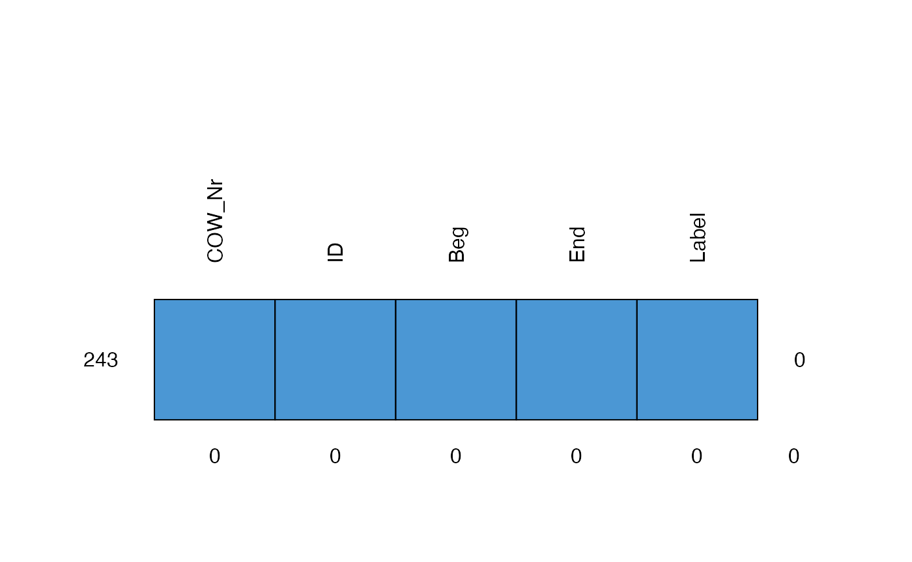
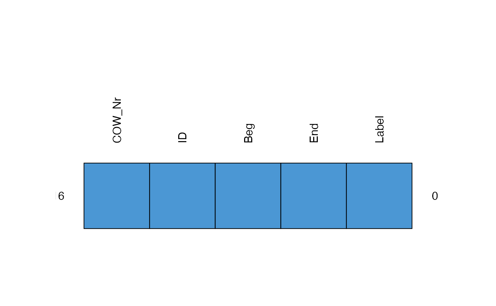
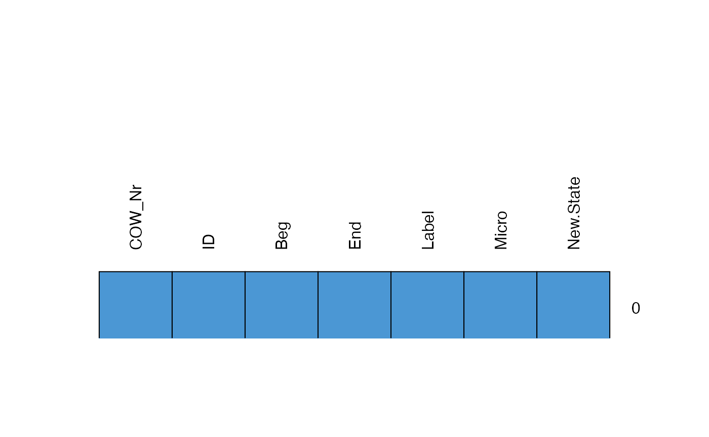

The first thing users of the package will want to do is to identify datasets that might contribute to their research goals. Since some of these data packages are too big for CRAN (the main though not only R package repository), we expect that their developers will instead choose to make their packages available on Github. Github is huge though, either way it can be difficult to identify salient data. We have tried to make this easy by allowing the reporting of all datasets in the ecosystem that we know of that currently pass our tests.
#> Loading required package: tibble#> # A tibble: 2 x 7
#> name full_name description installed latest updated contributors
#> <chr> <chr> <chr> <chr> <chr> <date> <chr>
#> 1 qData globalgov… An R portal for… 0.3.0 0.2.1 2020-11-26 jhollway, henr…
#> 2 qStat… globalgov… <NA> 0.0.1 0.0.1 2021-01-06 henriquesposit…In the future, this function will report more details about the datasets included in each package and their provenance.
For now, let us say that we wish to download the qStates package, which offers a set of datasets related to state actors in global governance. We can download and install the latest release version of the qStates package using the same function as before, only specifying which package we want to ‘get’:
get_packages("globalgov/qStates")Once the qpackage has been downloaded and installed, we are free to work with the data it contains. This qStates package includes several datasets. We can get a quick summary of the datasets included in this package with the following command:
data(package = "qStates")Let’s take a quick look at the main states data in this package.
data(states, package = "qStates")
states#> $COW
#> # A tibble: 243 x 5
#> COW_Nr ID Beg End Label
#> <chr> <chr> <date> <date> <chr>
#> 1 300 AUH 1816-01-01 1918-11-12 Austria-Hungary
#> 2 267 BAD 1816-01-01 1871-01-18 Baden
#> 3 245 BAV 1816-01-01 1871-01-18 Bavaria
#> 4 390 DEN 1816-01-01 1940-04-09 Denmark
#> 5 220 FRN 1816-01-01 1942-11-11 France
#> 6 255 GMY 1816-01-01 1945-05-08 Germany
#> 7 273 HSE 1816-01-01 1866-07-26 Hesse Electoral
#> 8 275 HSG 1816-01-01 1867-04-17 Hesse Grand Ducal
#> 9 325 ITA 1816-01-01 2016-12-31 Italy
#> 10 210 NTH 1816-01-01 1940-07-14 Netherlands
#> # … with 233 more rows
#>
#> $GW
#> # A tibble: 216 x 5
#> COW_Nr ID Beg End Label
#> <chr> <chr> <date> <date> <chr>
#> 1 700 AFG 1816-01-01 1888-12-30 Afghanistan
#> 2 615 ALG 1816-01-01 1830-07-05 Algeria
#> 3 300 AUH 1816-01-01 1918-11-13 Austria-Hungary
#> 4 267 BAD 1816-01-01 1871-01-17 Baden
#> 5 245 BAV 1816-01-01 1871-01-17 Bavaria
#> 6 710 CHN 1816-01-01 2017-12-31 China
#> 7 390 DEN 1816-01-01 2017-12-31 Denmark
#> 8 220 FRN 1816-01-01 2017-12-31 France
#> 9 255 GMY 1816-01-01 1945-05-07 Germany (Prussia)
#> 10 41 HAI 1816-01-01 1915-07-04 Haiti
#> # … with 206 more rows
#>
#> $ISD
#> # A tibble: 362 x 7
#> COW_Nr ID Beg End Label Micro New.State
#> <chr> <fct> <date> <date> <chr> <int> <int>
#> 1 8531 ACH 1816-01-01 1874-01-30 Aceh 1 0
#> 2 700 AFG 1816-01-01 1879-12-31 Afghanistan 0 0
#> 3 615 ALG 1816-01-01 1830-12-31 Algeria 0 0
#> 4 7572 ASA 1816-01-01 1817-04-30 Assam 0 0
#> 5 4521 AST 1816-01-01 1896-02-01 Ashanti 0 0
#> 6 300 AUH 1816-01-01 1918-11-12 Austria-Hungary 0 0
#> 7 4908 AZA 1816-01-01 1895-12-31 Azande 0 0
#> 8 267 BAD 1816-01-01 1871-01-18 Baden 0 0
#> 9 245 BAV 1816-01-01 1871-01-18 Bavaria 0 0
#> 10 7533 BHP 1816-01-01 1817-12-01 Bhopal 0 0
#> # … with 352 more rowsWe can see that there are three named datasets relating to states here: COW (Correlates of War), GW (Gleditsch and Ward), and ISD (International Systems Dataset). Each of these datasets has their advantages and so we may wish to understand their differences, summarise variables across them, and perhaps also rerun models across them.
To retrieve an individual dataset from this database, we can use the pluck() function from the purrr package.
COW <- purrr::pluck(states, "COW")However, the real value of qData packages is that multiple datasets relating to the same phenomenon are presented together. This facilitates comparison, the subject of the next section.
First of all, we want to understand what the differences are between these datasets. One important way to understand the relationship between these datasets is to understand what their relative advantages and disadvantages are. For example, one dataset may be long (has many observations) while another is shorter but wider (has more variables). One might include details further back in history or is more recent, but includes more missing data or less precise data (coded at a less granular level) than another with a more restrictive Or one might appear complete yet offer less information on where the original datapoints were sourced or how certain variables were coded, while another provides an extensive and transparent codebook that facilitates replication. Below we show how one might compare the data in states in these ways.
One way to see a quick summary of each of these datasets is using the glimpse() command from the tibble package. tibble is currently loaded along with qData and so there is no need to load it independently.
glimpse(states)#> List of 3
#> $ COW: tibble [243 × 5] (S3: tbl_df/tbl/data.frame)
#> ..$ COW_Nr: chr [1:243] "300" "267" "245" "390" ...
#> ..$ ID : chr [1:243] "AUH" "BAD" "BAV" "DEN" ...
#> ..$ Beg : Date[1:243], format: "1816-01-01" "1816-01-01" ...
#> ..$ End : Date[1:243], format: "1918-11-12" "1871-01-18" ...
#> ..$ Label : chr [1:243] "Austria-Hungary" "Baden" "Bavaria" "Denmark" ...
#> ..- attr(*, "spec")=List of 3
#> .. ..- attr(*, "class")= chr "col_spec"
#> $ GW : tibble [216 × 5] (S3: tbl_df/tbl/data.frame)
#> ..$ COW_Nr: chr [1:216] "700" "615" "300" "267" ...
#> ..$ ID : chr [1:216] "AFG" "ALG" "AUH" "BAD" ...
#> ..$ Beg : Date[1:216], format: "1816-01-01" "1816-01-01" ...
#> ..$ End : Date[1:216], format: "1888-12-30" "1830-07-05" ...
#> ..$ Label : chr [1:216] "Afghanistan" "Algeria" "Austria-Hungary" "Baden" ...
#> $ ISD: tibble [362 × 7] (S3: tbl_df/tbl/data.frame)
#> ..$ COW_Nr : chr [1:362] "8531" "700" "615" "7572" ...
#> ..$ ID : Factor w/ 310 levels "AAB","ACH","AFG",..: 2 3 5 10 12 13 16 18 21 26 ...
#> ..$ Beg : Date[1:362], format: "1816-01-01" "1816-01-01" ...
#> ..$ End : Date[1:362], format: "1874-01-30" "1879-12-31" ...
#> ..$ Label : chr [1:362] "Aceh" "Afghanistan" "Algeria" "Assam" ...
#> ..$ Micro : int [1:362] 1 0 0 0 0 0 0 0 0 0 ...
#> ..$ New.State: int [1:362] 0 0 0 0 0 0 0 0 0 0 ...We can see here, for example, that COW seems to have more observations of state sovereignty episodes than GW does.
We can also check whether one dataset has more missings than another. Here we are going to ‘map’ a function from the mice package over each of the datasets in the database. That function is the md.pattern() function. We will use the map() function to do this (though other ways are possible).
#> /\ /\
#> { `---' }
#> { O O }
#> ==> V <== No need for mice. This data set is completely observed.
#> \ \|/ /
#> `-----'
#> /\ /\
#> { `---' }
#> { O O }
#> ==> V <== No need for mice. This data set is completely observed.
#> \ \|/ /
#> `-----'
#> /\ /\
#> { `---' }
#> { O O }
#> ==> V <== No need for mice. This data set is completely observed.
#> \ \|/ /
#> `-----'
#> $COW
#> COW_Nr ID Beg End Label
#> 243 1 1 1 1 1 0
#> 0 0 0 0 0 0
#>
#> $GW
#> COW_Nr ID Beg End Label
#> 216 1 1 1 1 1 0
#> 0 0 0 0 0 0
#>
#> $ISD
#> COW_Nr ID Beg End Label Micro New.State
#> 362 1 1 1 1 1 1 1 0
#> 0 0 0 0 0 0 0 0Next we may be interested in whether any relationships we are interested in or inferences we want to draw are sensitive to which data we use. That is, we are interested in the robustness of any results to different data specifications. None of the states datasets are particularly wide, but let us try and examine the “Beg” variable to start with.
We can start by exploring whether our conclusion about when states first gained sovereignty would differ depending on which dataset we use. We can use the purrr::map() function used above, but this time pass it the mean() function and tell it to operate on just the “Beg” variable (removing any NAs). Since qData datasets are always ordered by “Beg” (and then “ID”), we can remove any subsequent (duplicated) entries by ID to concentrate on first appearances.
states %>%
purrr::map(function(x){
x %>% dplyr::filter(!duplicated(ID)) %>%
dplyr::summarise(mean(Beg, na.rm = TRUE))
})#> $COW
#> # A tibble: 1 x 1
#> `mean(Beg, na.rm = TRUE)`
#> <date>
#> 1 1930-10-14
#>
#> $GW
#> # A tibble: 1 x 1
#> `mean(Beg, na.rm = TRUE)`
#> <date>
#> 1 1910-02-05
#>
#> $ISD
#> # A tibble: 1 x 1
#> `mean(Beg, na.rm = TRUE)`
#> <date>
#> 1 1885-05-25It seems that there is some variation there. Of course, these averages are biased in the sense that these datasets are left-censored. Any state gaining sovereignty prior to 1816 is simply assigned as “1816-01-01”.